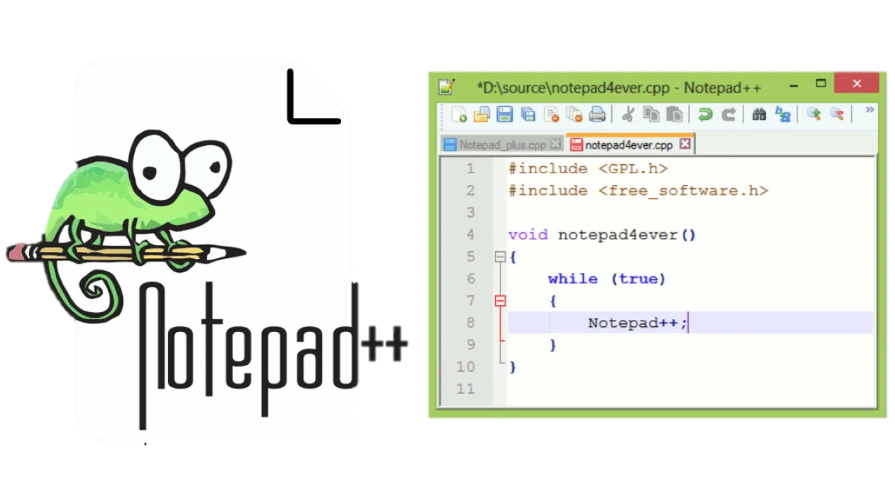
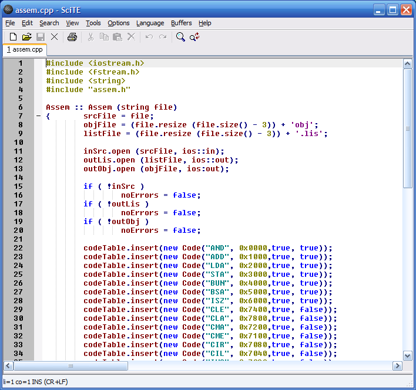

A Notepad++
A Notepad++ egy szöveg- és forráskódszerkesztő Windows platformra, de Linuxon és Macen is futtatható Wine segítségével.
Szabad szoftver, forráskódja a GitHub-on érhető el. 
Korábban kétszer nyerte meg a Community Choice Award for Best Developer Tool díjat a SourceForge oldalán. A forráskódok megnyitásához és megjelenítéséhez a Notepad++ a Scintilla komponenst használja. A Notepad++ egyik fő előnye a Windows beépített szerkesztőjével szemben a fülekkel ellátott felület, amely több fájl párhuzamos szerkesztését engedi meg, ezen kívül támogatja a UNIX/LINUX sorvégeket.
Néhány az általános képességek közül:
- Füles interfész
- Fogd és vidd
- Többszörös vágólap
- Osztott képernyős szerkesztés és szinkronizált görgetés
- Helyesírás-ellenőrzés a GNU Aspell segítségével (az ellenőrző nem tesz különbséget szöveg és forráskód között)
- Unicode és sok más karakterkódolás támogatása, köztük való konvertálás
- Keresés és csere több dokumentumon keresztül
- Fájlok összehasonlítása
- Nagyítás/kicsinyítés
Fejlett képességek a kódszerkesztés segítésére:
- Automatikus kiegészítés (az aktuális programnyelv kulcsszavai és a dokumentumban lévő szavak alapján)
- Könyvjelzők
- Blokk és bekezdés kiemelés
- Reguláris kifejezés használata keresés és csere funkcióhoz
- FTP böngésző (a szükséges plugint az alaptelepítés tartalmazza)
- Makró rögzítés és végrehajtás
- Különféle eszközök, mint sorrendezés, karakterkódolások közötti konverzió, szöveg becsomagolás (pl. hex, base64)
- Fájlstátusz automatikus detektálása (érzékeli, ha a megnyitott fájlt egy másik program is szerkeszti)
- Pluginek a többsoros reguláris kifejezések használatához a keresés és csere funkcióban
A Notepad++ a fent felsorolt funkciókat több, mint 50 programozási, szkriptelési és jelölőnyelvhez támogatja. Automatikusan felismerni a megnyitott fájlban használt nyelvet a kiterjesztés alapján, amihez egy testre szabható listát használ. A felhasználó manuálisan is átállíthatja az éppen használt nyelvet. A program támogatja sok programnyelv API-készletéhez az automatikus kiegészítést, emellett a makrókat és a plugineket.

Jelenleg közel 200 hivatalos plugin létezik, ebből többet tartalmaz alapértelmezetten. Az első plugin melyet mellékeltek, a TextFX volt, amely többek között W3C validálást ad a HTML és CSS kódhoz, szövegrendezést, és kis/nagybetűkezelést.
Ez a projekt a Scintilla szerkesztő komponenst használja, C++-ban íródott, szabályos Win API-t használ az STL-en keresztül a teljesítmény és kis méret érdekében. A cél a kevés erőforrás-használat a hatékony és tömör algoritmusok és megoldások használatával.
Érdekesség:
2008-ban, a "Boycott Beijing 2008" banner jelent meg a Notepad++ SourceForge.net-es weboldalán, hogy így járuljon hozzá az emberi jogok Kínában tapasztalható elnyomásának bemutatásához.
Ennek eredményeképpen az egész weboldal blokkolásra került Kínában egy hónapig (június 26. és július 24. között).